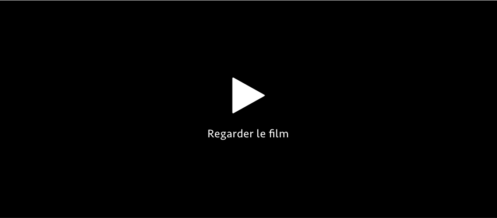
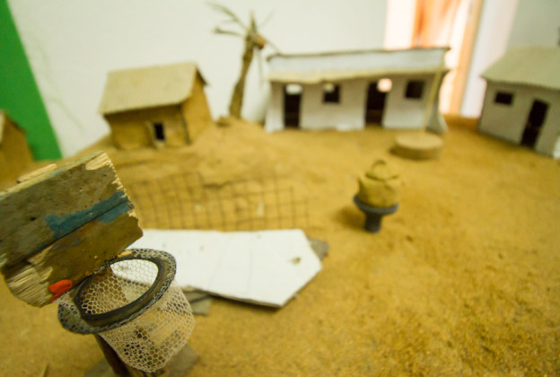
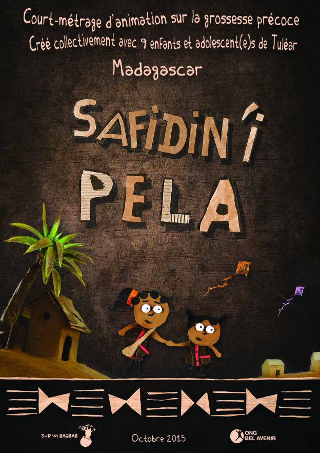

Safidin’i Pela
En association avec ONG Bel Avenir Pela, une jeune fille du sud de Madagascar, traîne les pieds sur le chemin de l’école. Elle hésite à suivre Ralay; cet homme, bien plus âgé qu’elle, l’invite à le suivre tout en lui donnant de l’argent. Elle rencontre alors son amie Vony, une très jeune maman qui lui raconte son histoire…
Le projet
Le court métrage « Safidin’i Pela » est le fruit d’un atelier cinéma d’animation qui s’est déroulé entre le mois de septembre et octobre 2015 à Tuléar, ville côtière du sud-ouest de Madagascar. L’atelier a été proposé aux bénéficiaires du Centre Art et Musique et du Foyer Social de l’ONG Bel Avenir, foyer dédié aux adolescentes en risque d’exclusion sociale et de grossesse précoce. Fin octobre, les 9 jeunes participant(e)s volontaires âgé(e)s de 11 à 19 ans présentent fièrement et en avant première leur création devant près de 200 spectateurs dans le vieux cinéma Le Tropic à Tuléar.
Selon le rapport 2011 « Les jeunes à Madagascar: faits et chiffres » de l’Unicef, 48,1% des jeunes filles entre 15 et 19 ans de la région de Atsimo-Andrefana, dont Tuléar est le chef-lieu, sont mères ou sont enceintes. En 2015, pour la même région et la même tranche d’âge, le Southern Africa Gender Protocol Alliance indique 56,2%. En d’autres termes, actuellement dans la région de Tuléar plus d’une adolescente sur deux tombe enceinte pour la première fois entre 15 et 19 ans et la situation à tendance à s’aggraver.
Malheureusement les grossesses précoces contribuent (avec les grossesses tardives, rapprochées et multiples) pour beaucoup aux taux élevés de mortalité, de mortalité infantile et juvénile, en particulier dans les pays pauvres. Les grossesses des adolescentes sont à risques. Elles augmentent également les taux de mortalité maternelle. Enfin, être une jeune maman réduit fortement la possibilité pour les jeunes femmes de faire des études et de travailler. Ces grossesses précoces risquent de porter un préjudice durable à leur qualité de vie et à celle de leurs enfants. (Binet, Gastineau et Rakotoson, 2010 : 257-272)
De cette constatation inquiétante est partie l’idée d’aborder la problématique de la grossesse précoce et plus particulièrement des relations entre adultes et jeunes filles car c’est une des causes courantes de grossesse précoce à Madagascar.
Making of
Une des étapes de fabrication d’un petit film d’animation est la création du décors. Pour celui-ci, les enfants ont créé une maquette d’un paysage malgache en matériaux « recyclés » ! Pour cela ils ont utilisé des déchets et des éléments trouvés dans la rue, par exemple des boites de conserves, un vieux grillage, un peu d’argile, du sable, un reste de moustiquaire, des vieux journaux, etc. Et on a mangé un ananas pour utiliser ses feuilles dans la fabrication de minis cocotiers.
Fiche technique
| Titre français | Le choix de Pela |
|---|---|
| Durée | 6min 17sec |
| Pays | Madagascar |
| Année | 2015 |
| Technique | 2D, papier-découpé, image par image, déchets recyclés |
| Thème | La grossesse précoce |
| Participants | 9 enfants et adolescents de Tuléar bénéficiaires du Centre Art et Musique et du Foyer Social de l’ONG Bel Avenir |
| Direction et coordination | Elena CABEDO GARCIA et François CHENOT |
| Assistants | Henrmine ANDRY, Virginie Olivia ANDRIAMPENOSOA Razandry M. LAFINIARIVO |
| Histoire originale | Emma LIDON et Josué AHIAVAO |
| Musique | MIKEBO |
| Montage son | Elena Cabedo Garcia |
| Montage image | François Chenot |
| Production | Sur un baobab |
| Langue | Vezo(dialecte malgache) |
| Sous-titres disponibles | ES / FR / EN / MG /CAT /IT |